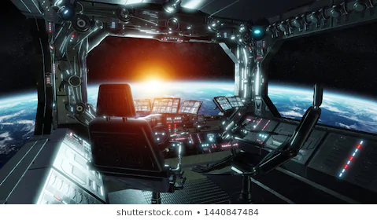
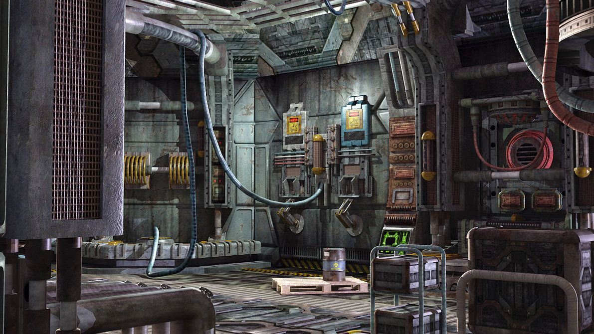

Opening the door
As you try to open the door, you realize how stuck it is but somehow with enough force it opens. The ship inside looks like nobody was in here recently. You decide to have a deep look around the place even if it means destroying the ship. You find a chest but no key, its not your priority but maybe theres a key around here too but you tell yourself to focus on the crystal
Where should you look?

